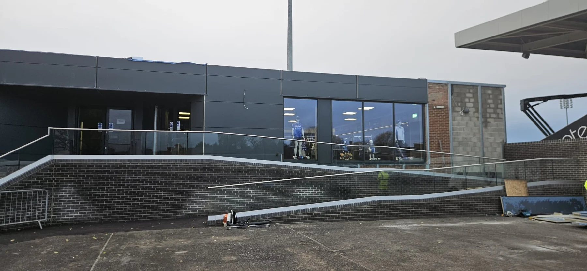

Project portfolio
Wakefield Trinity Stadium
External refurbishment of Wakefield Trinity’s souvenir shop and members’ bar in 2025, including wall overcladding and flat roof replacement.
- Client
- Wakefield Trinity
- Year
- 2025
- Buildings
- Souvenir shop and members’ bar
- Scope
- Wall overcladding and flat roof replacement
The project story
External refurbishment at Wakefield Trinity.
Project Cladding Services overclad the existing brickwork on all perimeter elevations and pitchside. Kingspan QuadCore Spectrum Stucco composite panels were installed horizontally on 100 mm deep galvanised top-hat sections.
All flat roof areas were replaced using the RapidRoof liquid-applied roof coating system.
The team delivered the project on time and within budget, with no reportable health and safety incidents.
Explore refurbishment servicesWakefield Trinity
Project photographs
Select a photograph to enlarge it.
Wakefield Trinity
Design render
Architectural visualisation showing the intended frontage.
Have a similar project in mind?
Send the site location, a short brief and any photographs or drawings. We’ll help you take the next step.